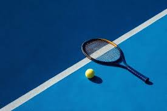
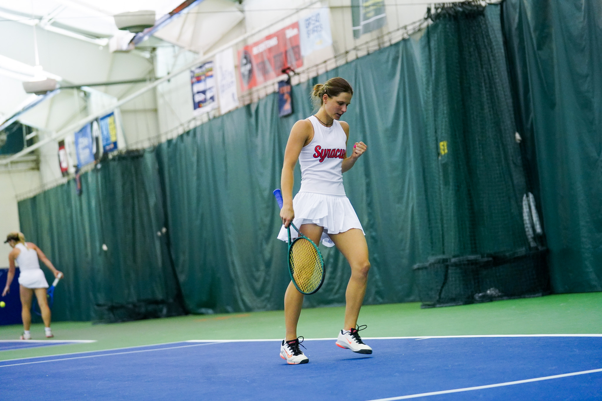

My Tennis Journey
Tennis has been a major part of my life from a young age. Over time, it became much more than a sport. It taught me how to stay focused, compete under pressure, and keep improving through both success and setbacks.

Tennis has been a major part of my life from a young age. Over time, it became much more than a sport. It taught me how to stay focused, compete under pressure, and keep improving through both success and setbacks.
Being a Division I athlete means balancing training, travel, recovery, and academics at the same time. That experience has strengthened my time management, accountability, and ability to stay organized under pressure.


